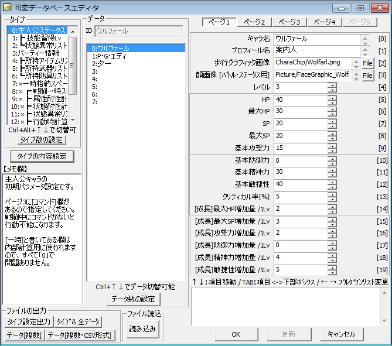

データベース 【可変データベース】

（サンプルゲーム・可変データベース）
・可変データベースの使い方
キャラクターのステータスや戦闘中の敵味方の状態（HP）など、ゲーム中に変化する情報を保存するためのデータベースで、ゲーム中に書き換えが可能です。基本的には、ツール利用者がゼロから作成します。
なお可変データベースに入力されている値は、ゲーム開始時の値として使用されます。
可変データベースへのデータの書き込みは、イベントコマンドの「変数操作」や「DB操作」から行うことができます。読み込みは、イベントコマンドの「DB操作」で行ってください。